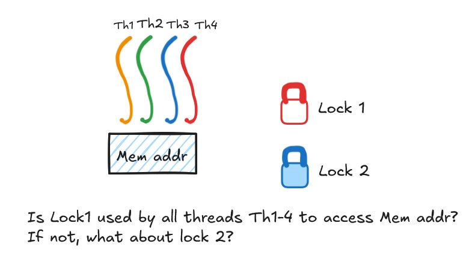

Helgrind
Concurrency issues in multi-threaded programs are notorious to track down. Helgrind is a dynamic analysis tool, part of the Valgrind suite, that helps in detecting such errors for C/C++ programs.
We are going to understand Helgrind a little better through the lens of two classes of concurrency errors - data race and deadlock due to lock ordering. There is another class of errors that Helgrind can help with - incorrect usage of the pthreads library; we’ll not consider that here.
Data Race
Helgrind first makes a note of memory locations accessed by more than more thread. For each such memory location, Helgrind asks: is there at least one lock used by all threads to protect that location?. If the answer to that question is no, Helgrind reports a data race.

With this understanding, we are ready to look at a simple example. Consider the following 2 threaded program here with unprotected access to a shared variable global_var. Clearly, there’s a data race condition. However, this error may not manifest itself during every execution of the program - let’s say thread p starts running and completes immediately after it’s created. However, the way Helgrind detects data races is by keeping internal data structures which let it answer the above question.
Another way of restating our lock question is that Helgrind asks: are accesses to shared memory addresses in happens-before relation? With respect to this version of the program, now using lock to avoid data race condition, we can say that whichever thread acquires the lock first, its operation on global_var happen-before the operation of the thread that acquires the lock second. It’s another way of framing of the desired atomicity property.
One thing to be careful is that Helgrind cannot detect potential data races in code paths that aren’t executed during the analysis run. So, for instance, for this program if we always give 0 as command line argument, Helgrind won’t be able to located the unprotected decrement to global_var in the else branch.
Inconsistent Lock Ordering (Deadlock)
Helgrind detects inconsistent lock ordering by maintaining a directed graph indicating the order in which locks have been acquired - if there’s a cycle in the graph, Helgrind will report the inconsistent lock ordering. This implies that even if make use of a meta gate-lock, such as here, to hide the inconsistent lock ordering, Helgrind will still be able to detect the deadlock and will complain. Some may think that it’s a false positive and that Helgrind is not able to operate at a higher-level to figure that the gate lock, in reality, protects the lock ordering. But I think there’s a good reason for Helgrind to still report this - what if there’s some code refactoring and someone decides to get rid of the meta-gate lock g? In any case, one may simply choose to ignore the warning if they are sure about what they’re doing.
Lock destruction: The pthreads API provides a function pthread_mutex_destroy to destroy a mutex. Normally it’s a good practice to destroy any mutex or conditional variable we’ve created. If we fail to do so, Helgrind will not complain. For small programs, it isn’t important and even for larger ones it may not be a big deal. However, if the API provides a way to destroy an entity we’ve created, it’s a good practice to use it.
Code in the associated gist has been borrowed and modified from Operating Systems: Three Easy Pieces by Remzi H. Arpaci-Dusseau and Andrea C. Arpaci-Dusseau. Thanks to Usman, Arbaaz, and Mukundan for the interesting discussion on these topics.